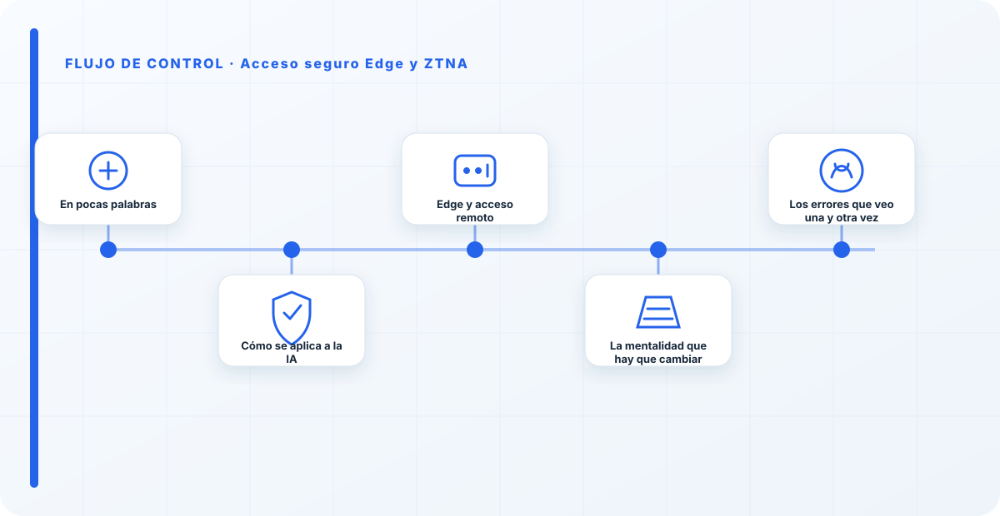
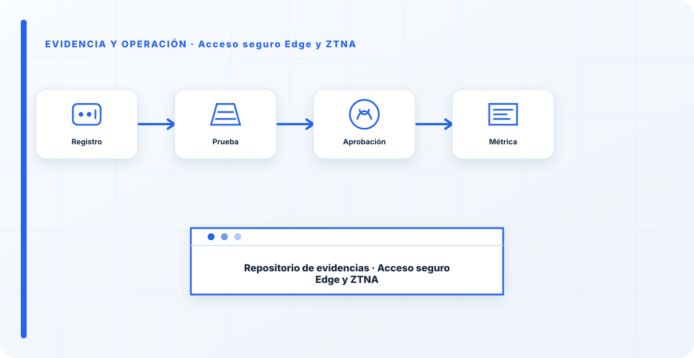

En pocas palabras
La confianza cero —zero trust— parte de una idea sencilla y poderosa: no se confía en nadie por el mero hecho de estar "dentro de la red". Cada acceso a un recurso de IA se verifica: quién eres, desde dónde, con qué dispositivo y con qué permiso. Aplicado a la IA, esto importa especialmente porque los sistemas de IA concentran datos y capacidades muy golosos, y el viejo modelo de "perímetro seguro, dentro todo vale" ya no protege absolutamente nada.
Cómo se aplica a la IA
En la práctica, ZTNA delante de los sistemas de IA significa identidad verificada en cada acceso, no un túnel que, una vez dentro, da vía libre a todo. El acceso se concede al recurso concreto que necesitas, no a la red entera donde vive ese recurso.
Y encaja de forma natural con el patrón de API gateway: la puerta verifica quién llama antes de dejar pasar hacia el modelo. Identidad primero, acceso después, y solo al recurso justo.
Edge y acceso remoto
Cuando la IA se consume desde muchos sitios —oficinas, trabajo remoto, dispositivos en el edge—, ZTNA evita el error clásico de abrir puertos o montar VPNs amplias que, en la práctica, dan acceso a media red interna. Con confianza cero, se accede al recurso concreto, verificado, y nada más; el resto de la red permanece invisible para ese usuario.
Es lo contrario de exponer un endpoint al mundo o de la VPN de "una vez dentro, eres de la familia". Cada petición se gana el acceso por sí misma, venga de donde venga.

La mentalidad que hay que cambiar
El modelo mental que hay que matar es el de "la red interna es de confianza". No lo es, y con la IA menos, porque un sistema de IA comprometido dentro de una red plana puede alcanzar todo lo que esa red alcanza. Confianza cero no es paranoia ni desconfianza gratuita; es asumir lo evidente: que el perímetro se rompe tarde o temprano, y que cada recurso debe poder defenderse por sí mismo verificando quién llama, sin depender de que "los malos se hayan quedado fuera".
El modelo mental que hay que matar es el de "la red interna es de confianza". No lo es, y con la IA menos, porque un sistema de IA comprometido dentro de una red plana puede alcanzar todo. Confianza cero no es paranoia, es asumir lo evidente: que el perímetro se rompe, y que cada recurso debe defenderse por sí mismo verificando quién llama.
Los errores que veo una y otra vez
- Confiar en el acceso solo por estar "dentro de la red".
- Dar acceso a la red en vez de al recurso concreto.
- Abrir puertos o VPNs amplias para el acceso remoto.
- No verificar dispositivo y contexto, solo usuario.
- Tratar el edge como si fuera el centro de datos.
Cómo lo llevaría a un entorno real
Cuando aterrizo acceso seguro edge y ztna en una organización, no empiezo por comprar una herramienta ni por redactar veinte páginas. Empiezo por dibujar qué ocurre hoy: quién solicita el cambio, quién lo aprueba, qué sistemas intervienen, qué datos cruzan el proceso y quién se entera cuando algo falla. Ese dibujo suele descubrir más problemas que cualquier checklist. En arquitectura segura, lo peligroso no es solo carecer de controles; también lo es creer que existen porque alguien los escribió una vez.
Después separo lo imprescindible de lo deseable. Lo imprescindible debe poder comprobarse: un responsable identificado, una regla clara, una evidencia fechada y un mecanismo para reaccionar. En este caso revisaría especialmente Acceso, seguro y Edge. No me vale una respuesta del tipo «lo gestiona el proveedor» o «eso lo mira seguridad». Necesito saber qué persona toma la decisión, con qué información y dentro de qué plazo.
La implantación debe crecer con el riesgo. Un piloto interno puede funcionar con una ficha breve y una revisión manual. Un sistema que afecta a clientes, empleados, dinero o información sensible necesita segregación de funciones, pruebas independientes, monitorización y un expediente mantenido. Mi criterio es sencillo: cuanto más difícil sea deshacer el daño, más fuerte debe ser la barrera antes de producción.
Decisiones que deben quedar por escrito
Hay decisiones que no deberían vivir en una reunión ni en un mensaje de chat. Para acceso seguro edge y ztna dejaría documentados el alcance, los supuestos, los límites de uso, las excepciones aceptadas y las condiciones que obligan a detener o reevaluar. El documento no tiene que ser enorme, pero sí debe permitir que otra persona entienda por qué se hizo lo que se hizo.
También registraría quién puede cambiar responsable, quién valida control y quién recibe las alertas relacionadas con evidencia. Cuando esas tres responsabilidades se mezclan, aparece el clásico problema: el mismo equipo construye, aprueba y declara que todo funciona. No siempre se puede separar por completo, sobre todo en organizaciones pequeñas, pero al menos debe existir una revisión por alguien que no dependa del éxito inmediato del despliegue.
Las excepciones merecen un tratamiento propio. Una excepción sin fecha de caducidad acaba convirtiéndose en la arquitectura real. Por eso exigiría motivo, riesgo aceptado, responsable, compensaciones, fecha de revisión y criterio de cierre. Si falta uno de esos elementos, no es una excepción gestionada; es una deuda invisible.

Un ejemplo práctico
Imaginemos que un equipo quiere incorporar acceso seguro edge y ztna a un servicio que ya está en producción. La propuesta promete reducir tiempos y automatizar tareas, pero utiliza componentes que cambian con frecuencia. Antes de aprobarlo, pediría una prueba limitada, un inventario de dependencias, un flujo de datos y una definición clara de qué acciones quedan fuera del alcance.
Durante la prueba recogería resultados normales y casos límite. No solo miraría si funciona; comprobaría qué ocurre cuando faltan datos, cambia una versión, se pierde conectividad, llega una entrada manipulada o un usuario intenta superar sus permisos. Ahí es donde se ve si el diseño aguanta. En muchas pruebas felices todo parece seguro porque nadie ha intentado romper la hipótesis de partida.
Si los resultados son aceptables, la salida a producción tendría condiciones: versión fijada, configuración aprobada, logs disponibles, responsables de guardia, procedimiento de rollback y revisión tras las primeras semanas. Si alguno de esos elementos no existe, prefiero retrasar el despliegue. Un día de demora suele ser más barato que investigar después un comportamiento que nadie puede reconstruir.
Qué evidencias guardaría
Para demostrar que el control funciona conservaría evidencias que cuenten una historia completa, no capturas sueltas. La historia debe enlazar necesidad, decisión, implementación, prueba y operación. En acceso seguro edge y ztna eso incluye como mínimo la ficha del activo, el diagrama vigente, la configuración aprobada, el resultado de las pruebas y el registro de cambios.
No guardaría información por acumular. Si los logs contienen prompts, documentos, datos personales o secretos, aplicaría minimización, control de acceso y retención. La evidencia debe ayudar a investigar y auditar sin crear una segunda fuga de información. Es frecuente endurecer el sistema principal y dejar un repositorio de evidencias abierto a demasiadas personas.
- Propietario y finalidad de acceso seguro edge y ztna, con fecha de revisión.
- Inventario de Acceso, seguro y dependencias asociadas.
- Criterios de aceptación y resultados sobre Edge y responsable.
- Configuración efectiva, versión y aprobación del cambio.
- Alertas, incidentes, excepciones y acciones correctivas cerradas.
Señales de que el control no está funcionando
El primer síntoma es que nadie sabe responder con rapidez quién es el responsable. El segundo es que la documentación describe una versión distinta de la que está operando. El tercero es que las alertas existen, pero llegan a un buzón que nadie revisa. Cuando aparecen esos tres síntomas, el problema no es tecnológico: el control se ha desconectado de la operación.
También desconfío de las métricas demasiado perfectas. Cero incidentes, cero excepciones y cien por cien de cumplimiento pueden significar excelencia, pero con frecuencia significan que no estamos mirando. Prefiero indicadores que enseñen tendencia: tiempo de corrección, antigüedad de excepciones, cobertura de pruebas, cambios sin revisión y reincidencias.
Por último, revisaría el comportamiento después de cada cambio significativo. En IA, una actualización de modelo, dataset, prompt, herramienta, permiso o proveedor puede alterar el riesgo sin cambiar el nombre del servicio. Si el proceso solo reevalúa cuando se crea un proyecto nuevo, se quedará ciego durante la mayor parte de la vida útil.
Mi criterio de cierre
Considero que acceso seguro edge y ztna está razonablemente controlado cuando el equipo puede explicar el proceso sin depender de una sola persona, reconstruir una decisión con evidencias y detener el servicio sin improvisar. No busco perfección documental; busco que la organización pueda tomar decisiones repetibles bajo presión.
El cierre no consiste en marcar todas las casillas. Consiste en demostrar que los riesgos relevantes tienen propietario, que los controles se prueban y que las desviaciones producen una acción. Si la evidencia no cambia ninguna decisión, probablemente estamos generando burocracia. Si una decisión importante no deja evidencia, estamos creando fragilidad.
Este enfoque es el que intento mantener en toda CyberLibrary AI: explicar el control de forma que lo entienda negocio, pero con suficiente profundidad para que arquitectura, seguridad, auditoría y operaciones puedan aplicarlo de verdad.
Referencias y marcos relacionados
Contenido educativo y técnico. No sustituye asesoramiento jurídico ni una auditoría formal.